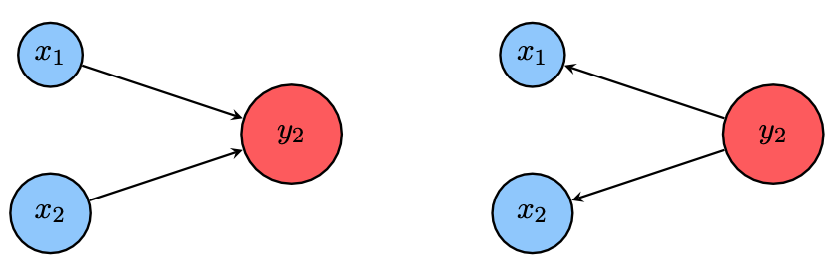
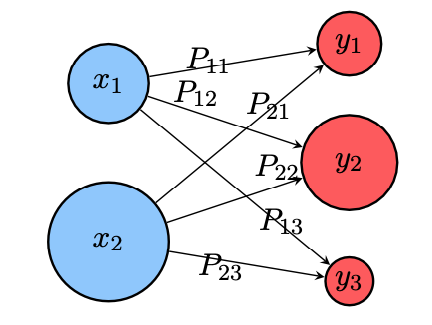
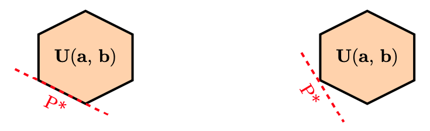

2.2 Optimal Transport for Discrete Measures
As an example of the Monge and Kantorovich OT problems, one can apply the theory to discrete measures. This application not only demonstrates the importance of the theory but also elucidates the geometric interpretation of OT.
In some OT textbooks, the discrete OT in Monge or Kantorovich form is introduced first and then generalized to OT for continuous measures. Depending on the preference of the readers, one may start with this section and then return to continuous OT, or simply follow the natural order.
We will use interchangeably the terms histogram and probability vector for any element \(\mathbf {a} \in \Sigma _n\) that belongs to the probability simplex \[ \Sigma _n := \left \{ \mathbf {a} \in \mathbb {R}^n_+ : \sum _{i=1}^n a_i = 1 \right \}. \] A large part of this lecture notes focuses exclusively on the study of the geometry induced by optimal transport on the simplex.
Definition 2.2.1 (Discrete measures). A discrete measure \(\alpha \) with weights \(\mathbf {a}\) and locations \(x_1, \ldots , x_n \in X\) reads \begin {align} \label {eqn:discrete_measure} \alpha = \sum _{i=1}^n a_i \delta _{x_i}, \end {align}
where \(\delta _{x}\) is the Dirac at position \(x\), intuitively a unit of mass which is infinitely concentrated at location \(x\). Such a measure describes a probability measure if, additionally, \(\mathbf {a} \in \Sigma _n\) and more generally a positive measure if all the elements of vector are nonnegative. To avoid degeneracy issues where locations with no mass are accounted for, we will assume when considering discrete measures that all the elements of \(\mathbf {a}\) are positive.
Remark 2.2.2 (Push-forward operator on discrete measures). For discrete measures (2.4), the push-forward operation consists simply in moving the positions of all the points in the support of the measure \[ T_\sharp \alpha := \sum _i a_i \delta _{T(x_i)}. \]
2.2.1 Monge optimal transport for discrete measures
Now we can define the discrete Monge OT using the push-forward operator on discrete measures.
Definition 2.2.3 (Monge OT between discrete measures). Given discrete measures \begin {align} \label {eqn:discrete_measure02} \alpha = \sum _{i=1}^n a_i \delta _{x_i}, \quad \text {and} \quad \beta = \sum _{j=1}^m b_j \delta _{y_j}, \end {align}
and a cost function \(c(x,y)\), Monge OT between discrete measures is a minimization problem \begin {align} \mathcal {L}_{c}(\alpha , \beta ) := \min _T \left \{\sum _i c(x_i, T(x_i)) \mid T_\sharp \alpha = \beta \right \}.\label {eqn:Monge_discrete} \end {align}
The Monge map \(T: \{x_i\}_{i=1}^n \to \{y_i\}_{j=1}^m \) satisfying \(T_\sharp \alpha = \beta \) can equivalently be described as fulfilling the mass conservation condition: \begin {align} \label {eqn:Monge_map_mass_conservation} b_j = \sum _{i: T(x_i)=y_j} a_i, \quad \forall j \in [m]. \end {align}
Such a map \(T\) between discrete points can be of course encoded, assuming all \(x\)’s and \(y\)’s are distinct, using indices \( \sigma : [n] \rightarrow [m] \) such that \( j = \sigma (i) \), and the mass conservation is written as \[ b_j = \sum _{i \in \sigma ^{-1}(j)} a_i, \] where the inverse \(\sigma ^{-1}(j)\) is to be understood as the preimage set of \(j\). In the special case when \( n = m \) and all weights are uniform, that is, \( a_i = b_j = \frac {1}{n} \), then the mass conservation constraint implies that \( T \) is a bijection, such that \( T(x_i) = y_{\sigma (i)} \), and the Monge problem is equivalent to the following optimal matching problem: \begin {align} \min _{\sigma \in \text {Perm(n)}} \frac {1}{n} \sum _{i=1}^n C_{i,\sigma (i)} \end {align}
where the cost matrix \(\mathbf {C} = (C_{ij})_{n\times m}\) is given through the evaluation of the cost function over discrete locations \(C_{ij} := c(x_i, y_j)\).
However, when \( n \neq m \), Monge maps may not even exist between a discrete measure to another. This happens when their weight vectors are not compatible, which is always the case when the source measure \(\alpha \) has fewer points than the target measure \(\beta \), \( n < m \). See Figure 2.1 for a failed example.

2.2.2 Kantorovich optimal transport for discrete measures
As seen in the previous section, discrete Monge OT may not be well-defined in the absence of feasible solutions satisfying the mass conservation constraint (2.7). Additionally, discrete Monge OT is a nonconvex problem. Both drawbacks are therefore difficult to overcome.
The key idea of Kantorovich is to relax the deterministic nature of transportation, namely the fact that a source point \(x_i\) can only be assigned to another point or location \(y_{\sigma (i)}\), or \(T(x_i)\) only. Kantorovich proposes instead that the mass at any point \(x_i\) be potentially dispatched across several locations. Kantorovich moves away from the idea that mass transportation should be deterministic to consider instead a probabilistic transport, which allows what is commonly known now as mass splitting from a source toward several targets. This flexibility is encoded using, in place of a permutation or a map \(T\), a coupling matrix \(\mathbf {P} = (P_{ij}) \in \mathbb {R}^{n \times m}\), where \(P_{ij}\) describes the amount of mass flowing from bin \(i\) to bin \(j\), or from the mass found at \(x_i\) toward \(y_j\) in the formalism of discrete measures (2.5). Admissible couplings admit a far simpler characterization than Monge maps, \begin {align} \mathbf {U}(\mathbf {a}, \mathbf {b}) = \left \{ \mathbf {P} \in \mathbb {R}_+^{n \times m} : \mathbf {P}\mathbf {1} = \mathbf {a}, \mathbf {P}^{\text {T}}\mathbf {1} = \mathbf {b} \right \}, \end {align}
in which \(\mathbf {1}\) represents all-one vector whose dimension is determined by dimension consistency of matrix multiplication in the context. In other words, the two constraints indicate that the row and column sums of \(\mathbf {P}\) equal \(\mathbf {a}\) and \(\mathbf {b}\), respectively. The set of matrices \( \mathbf {U}(\mathbf {a}, \mathbf {b}) \) is bounded and defined by \( n+m \) equality constraints, and therefore is a convex polytope (the convex hull of a finite set of matrices).

Definition 2.2.4 (Kantorovich OT between discrete measures). Given discrete measures in (2.5) and a cost function \(c(x,y)\), Kantorovich OT between discrete measures is a minimization problem \begin {align} \mathcal {L}_{c}(\alpha , \beta ) := \min _{\mathbf {P}\in \mathbf {U}(\mathbf {a}, \mathbf {b})} \sum _{i,j} P_{ij}c(x_i,y_j). \label {eqn:Kantorovich_discrete_01} \end {align}
If a cost matrix \(\mathbf {C}\) is directly given, corresponding to the cost between \(\{x_i\}_{i=1}^n\) and \(\{y_j\}_{j=1}^m\), then the Kantorovich OT between probability vectors reads \begin {align} L_{\mathbf {C}}(\mathbf {a}, \mathbf {b}) := \min _{\mathbf {P}\in \mathbf {U}(\mathbf {a}, \mathbf {b})} \langle \mathbf {P}, \mathbf {C} \rangle = \sum _{i,j} P_{ij} C_{ij}. \label {eqn:Kantorovich_discrete_02} \end {align}
Remark 2.2.5. Discrete Kantorovich OT problem is a linear programming with convex constraints. Therefore the minimizers are achieved on the boundary of the convex polytope \( \mathbf {U}(\mathbf {a}, \mathbf {b}) \), and are not necessarily unique. See Figure 2.3 for the schematic illustration.
The Kantorovich problem (2.11 ) is a constrained convex minimization problem, and as such, it can be naturally paired with a dual problem, which is a constrained concave maximization problem. The following fundamental proposition explains the relationship between the primal and dual problems.
Proposition 2.2.6 (Discrete Kantorovich dual). The Kantorovich problem (2.11) admits the dual \begin {align} L_{\mathbf {C}}(\mathbf {a}, \mathbf {b}) = \max _{(\mathbf {f}, \mathbf {g}) \in \mathbf {R}(\mathbf {C})} \langle \mathbf {f}, \mathbf {a} \rangle + \langle \mathbf {g}, \mathbf {b} \rangle , \end {align}
where the set of feasible dual variables is \begin {align} \mathbf {R}(\mathbf {C}) := \{(\mathbf {f}, \mathbf {g}) \in \mathbb {R}^n \times \mathbb {R}^m : \forall (i, j) \in [n] \times [m], \mathbf {f} \oplus \mathbf {g} \leq \mathbf {C} \}. \end {align}
Such dual variables are often referred to as “Kantorovich potentials”.
